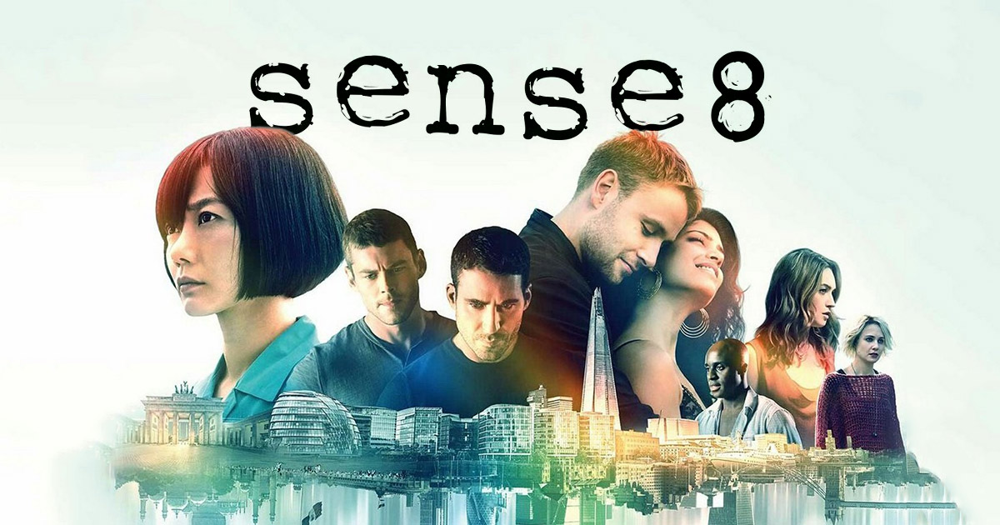

Sense 8
Cuenta la historia de ocho desconocidos de diferentes culturas, razas y orientaciones sexuales que de repente se conectan telepáticamente y son capaces de sentir, ver y escuchar lo mismo que el otro. La serie explora temas como la política, la identidad, el racismo, la sexualidad, el género y la religión
